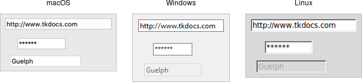

Entry
An entry widget presents users with a single line text field where they can type in a string value. These can be just about anything: a name, a city, a password, social security number, etc.
| Entry widgets |
|---|
|  |
Entries are created using the add_ttk_entry method:
#![allow(unused)] fn main() { parent.add_ttk_entry( "name" -textvariable("username") )?; }
A width configuration option may be specified to provide the number of
characters wide the entry should be. This allows you, for example, to display a
shorter entry for a zip or postal code.
Entry Contents
We've seen how checkbutton and radiobutton widgets have a value associated with
them. Entries do as well, and that value is usually accessed through a linked
variable specified by the textvariable configuration option.
Unlike the various buttons, entries don't have a text or image beside them to identify them. Use a separate label widget for that.
You can also get or change the value of the entry widget without going through
the linked variable. The get method returns the current value, and the
delete and insert methods let you change the contents, e.g.
#![allow(unused)] fn main() { println!( "current value is {}", name.get() ); name.delete_range( 0.. )?; // delete between two indices, 0-based name.insert( 0, "your name" )?; // insert new text at a given index }
Watching for Changes
Entry widgets don't have a command option to invoke a callback whenever the
entry is changed. To watch for changes, you should watch for changes to the
linked variable. See also "Validation", below.
#![allow(unused)] fn main() { #[proc] fn it_has_been_written() -> TkResult<()> { Ok(()) } interpreter.trace_add_variable_write( "username", "it_has_been_written" )?; }
You'll be fine if you stick with simple uses of trace_add_variable_write like
that shown above. You might want to know that this is a small part of a much
more complex system for observing variables and invoking callbacks when they are
read, written, or deleted. You can trigger multiple callbacks, add or delete
them (trace_remove_variable_write), and introspect them
(trace_info_variable).
Passwords
Entries can be used for passwords, where the actual contents are displayed as a
bullet or other symbol. To do this, set the show configuration option to the
character you'd like to display.
#![allow(unused)] fn main() { parent.add_ttk_entry( "passwd" -textvariable("password") -show("*") )?; }
Widget States
Like the various buttons, entries can also be put into a disabled state via the
state command (and queried with instate). Entries can also use the state
flag readonly; if set, users cannot change the entry, though they can still
select the text in it (and copy it to the clipboard). There is also an invalid
state, set if the entry widget fails validation, which leads us to...
Validation
Users can type any text they like into an entry widget. However, if you'd like to restrict what they can type into the entry, you can do so with validation. For example, an entry might only accept an integer or a valid zip or postal code.
Your program can specify what makes an entry valid or invalid, as well as when to check its validity. As we'll see soon, the two are related. We'll start with a simple example, an entry that can only hold an integer up to five digits long.
The validation criteria is specified via an entry's validatecommand
configuration option. You supply a piece of code whose job is to validate the
entry. It functions like a widget callback or event binding, except that it
returns a value (whether or not the entry is valid). We'll arrange to validate
the entry on any keystroke, which is specified by providing a value of key to
the validate configuration option.
#![allow(unused)] fn main() { let validate_cmd = tclfn!( &tk, args: "%P", fn check_num( new_val: String ) -> TclResult<bool> { Ok( new_val.len() <= 5 && new_val.chars().filter( |&ch| ch >= '0' && ch <= '9' ).count() <= 5 ) } ); root.add_ttk_entry( "e" -textvariable("num") -validate("key") -validatecommand(validate_cmd) )? .grid( -column(0) -row(2) -sticky("we") )?; }
A few things are worth noting. First, as with event bindings, we can access more information about the conditions that triggered the validation via percent substitutions. We used one of these here: `%P is the new value of the entry if the validation passes. We'll use a simple regular expression and a length check to determine if the change is valid. To reject the change, our validation command can return a false value, and the entry will remain unchanged.
Let's extend our example so that the entry will accept a US zip code, formatted as "#####" or "#####-####" ("#" can be any digit). We'll still do some validation on each keystroke (only allowing entry of numbers or a hyphen). However, We can no longer fully validate the entry on every keystroke; if they've just typed the first digit, it's not valid yet. So full validation will only happen when the entry loses focus (e.g., a user tabs away from it). Tk refers to this as revalidation, in contrast with prevalidation (accepting changes on each keystroke).
How should we respond to errors? Let's add a message reminding users of the format. It will appear if they type a wrong key or tab away from the entry when it's not holding a valid zip code. We'll remove the message when they return to the entry or type a valid key. We'll also add a (dummy) button to "process" the zip code, which will be disabled unless the zip entry is valid. Finally, we'll also add a "name" entry so you can tab away from the zip entry.
#![allow(unused)] fn main() { const FORMATMSG: &'static str = "Zip should be ##### or #####-####"; let f = root.add_ttk_frame( "f" )? .grid( -column(0) -row(3) )?; f.add_ttk_label( "l1" -text("Name:") )? .grid( -column(0) -row(4) -padx(5) -pady(5) )?; let _e1 = f.add_ttk_entry( "e1" )? .grid( -column(1) -row(4) -padx(5) -pady(5) )?; f.add_ttk_label( "l" -text("Zip:") )? .grid( -column(0) -row(5) -padx(5) -pady(5) )?; let f_btn = f.add_ttk_button( "btn" -text("Process") )? .grid( -column(2) -row(5) -padx(5) -pady(5) )?; f_btn.set_state( TtkState::Disabled )?; let check_zip_cmd = tclosure!( tk, cmd: "check_zip", args: "%P %V", move |new_val: String, op: String| -> TkResult<bool> { let interp = tcl_interp!(); interp.set( "errmsg", "" ); let re = r#"^[0-9]{5}(\-[0-9]{4})?$"#; let regex = Regex::new( re ).unwrap(); let valid = regex.is_match( &new_val ); f_btn.set_state( if valid{ !TtkState::Disabled } else{ TtkState::Disabled })?; if op == "key" { let regex = Regex::new( r#"^[0-9\-]*$"# ).unwrap(); let ok_so_far = regex.is_match( &new_val ) && new_val.len() <= 10; if !ok_so_far { interp.set( "errmsg", FORMATMSG ); } return Ok( true ); } else if op == "focusout" { if !valid { interp.set( "errmsg", FORMATMSG ); } } if valid { Ok( true ) } else { Ok( false ) } } ); f.add_ttk_entry( "e" -textvariable("zip") -validate("all") -validatecommand(check_zip_cmd) )? .grid( -column(1) -row(5) -padx(5) -pady(5) )?; f.add_ttk_label( "msg" -font("TkSmallCaptionFont") -foreground("red") -textvariable("errmsg") )? .grid( -column(1) -row(2) -padx(5) -pady(5) -sticky("w") )?; }
Notice that the validate configuration option has been changed from key to
all. That arranges for the validatecommand callback to be invoked on not
only keystrokes but other triggers. The trigger is passed to the callback using
the %V percent substitution. The callback differentiated between key and
focusout triggers (you can also check for focusin).
There's a few more things to know about validation. First, if your
validatecommandever generates an error (or doesn't return a boolean), validation will be disabled for that widget. Your callback can modify the entry, e.g., change its textvariable. You can ask the widget to validate at any time by calling it'svalidatemethod, which returns true if validation passes (the%Vsubstitution is set toforced).
There is an
invalidcommandconfiguration option (which works likevalidatecommand) that is called whenever validation fails. You can use it to accomplish nasty things like forcing the focus back on the widget that didn't validate. In practice, it's rarely used. As mentioned earlier, the entry'sinvalidstate flag (which can be checked via theinstateinvalidmethod) is automatically updated as validation succeeds or fails.
Other percent substitutions allow you to get the entry's contents prior to editing (
%s), differentiate between insert and delete (%d), where an insert or delete occurs (%i), what is being inserted or deleted (%S), the current setting of thevalidateoption (%v) and the name of the widget (%W).
Run Example
cargo run --example entry